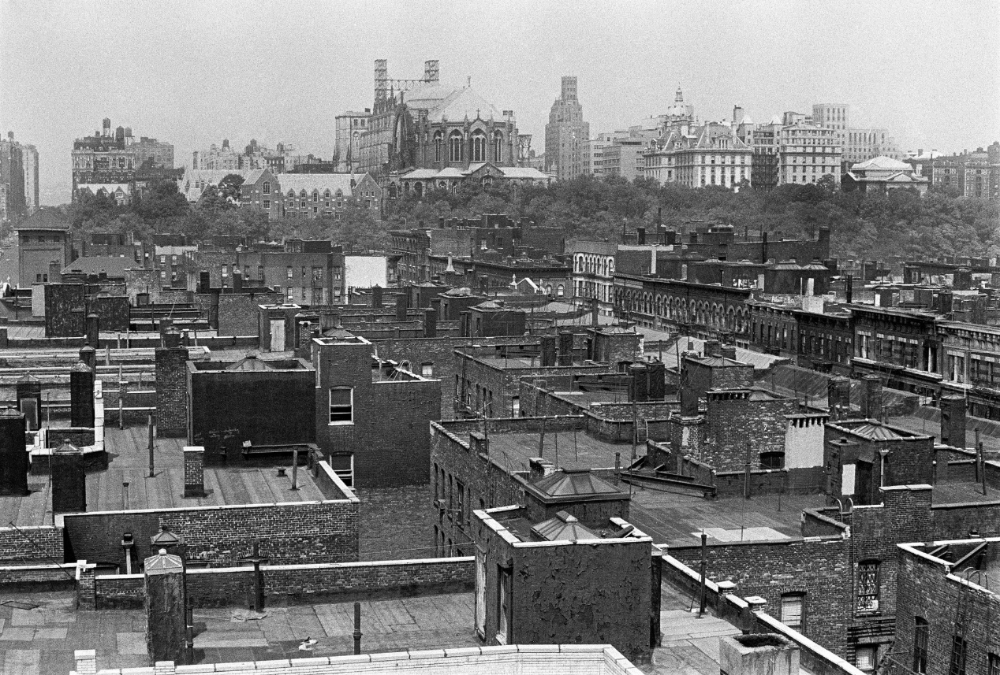
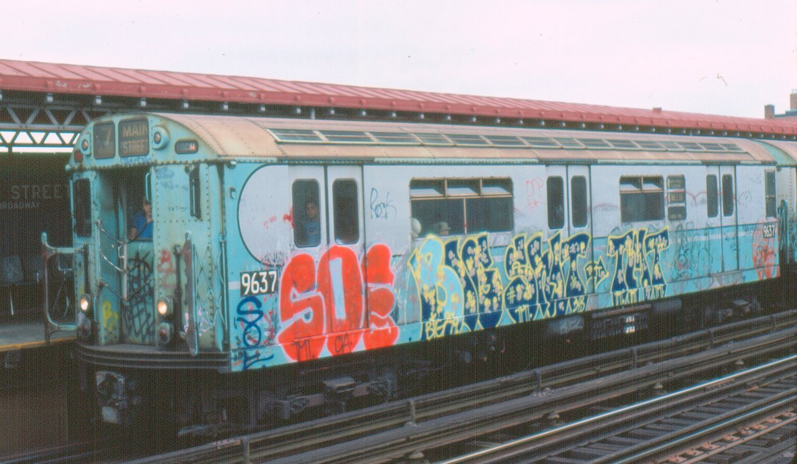
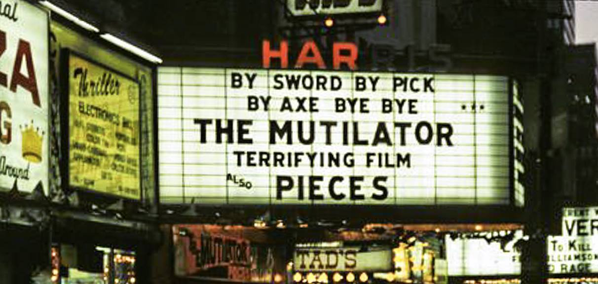
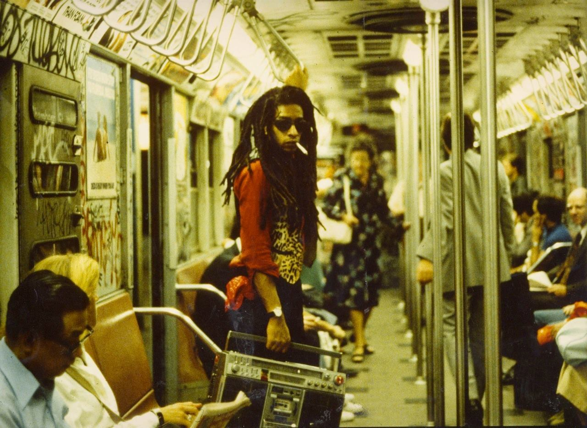
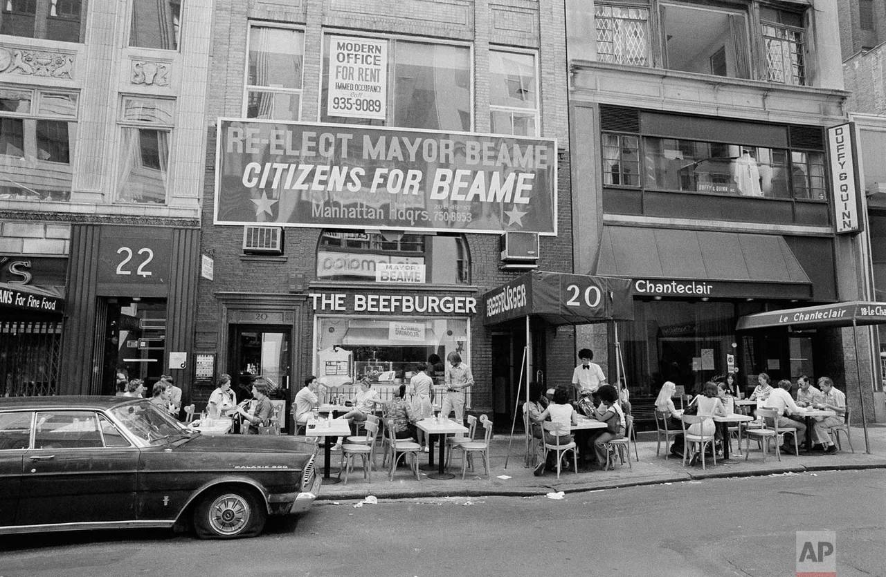

Do you have anything from Brownsville in the 80s?
No, but now I have a mission…
No, but now I have a mission…

Snow cones in Harlem

110th Street, looking northwest toward the Cathedral of St. John the Divine, 1966

7 train in Queens

No smoking, no loud music.

Park Ave and 97th

Pink Champale, 1980
Throw up, 1980

Worst bed ever.

Williamsburg, 1984


documerica: wil blanche… new york 1973 @ usnationalarchives

A VP of Motorola shows off the 1973 state of the art mobile phone.
It’s all good!

Harris Theater, 226 W42nd Street, ca. 1984

Bombed

Riding between the cars…

Dondi

Too cool to sit down.

Times Square, 1971

Smog over Manhattan, 1973

Midtown during the 1977 blackout